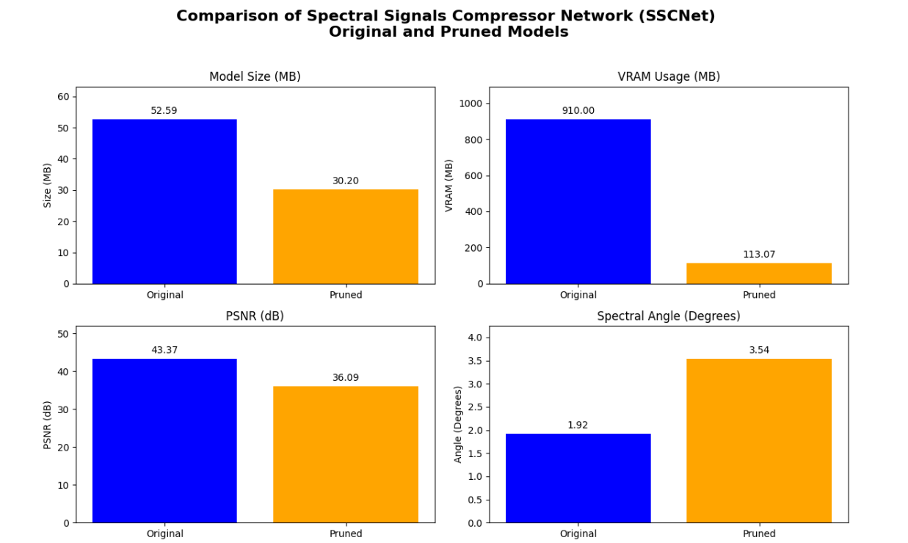

Leveraging Deep Neural Network Compression Techniques for Real-Time Hyperspectral Image Processing in Edge AI
Authors: Dheeraj Kumar, Leila Mozaffari
Abstract
Hyperspectral imaging has become increasingly relevant in remote sensing applications due to its ability to capture detailed spectral information. The growth of hyperspectral datasets has necessitated efficient compression techniques to handle their massive storage requirements. This paper proposes a new approach that integrates the Spectral Signals Compressor Network (SSCNet), a state-of-the-art deep learning-based hyperspectral image compression model, with FasterAI pruning to improve compression efficiency. We used HySpecNet-11k, a large-scale hyperspectral benchmark dataset, to validate our approach. The results show significant improvements in compression rates while preserving high-quality image reconstruction, thus setting a new benchmark for learning-based hyperspectral image compression.
Model compression is a key technique used to reduce the memory footprint and computational demands of deep learning models, making them more suitable for deployment on resource-constrained devices. Model compression can be achieved through various techniques such as pruning, knowledge distillation, and quantization. Pruning, which is one such model compression technique, involves systematically removing unimportant weights or neurons from a network to reduce model size and computational complexity while maintaining acceptable levels of accuracy. In this paper, we implemented pruning from FasterAI to enhance SSCNet, making it more efficient without significantly compromising performance. We compare the original model and the pruned model to evaluate the benefits and impact of model compression.

1. Introduction
Recent advancements in hyperspectral imaging technology have led to the proliferation of hyperspectral data, significantly improving the identification and discrimination of materials in remote sensing applications. However, the resulting large volume of data necessitates efficient storage and transmission, driving research in hyperspectral image compression. Traditional approaches, which often combine transform coding and quantization techniques, face challenges when dealing with high-dimensional data. To address these limitations, learning-based methods leveraging convolutional autoencoders have emerged as promising alternatives for hyperspectral image compression [5].
In this paper, we present an improved hyperspectral image compression method by applying pruning using FasterAI on SSCNet [4], a convolutional autoencoder-based architecture. We leverage the HySpecNet-11k dataset [2], which provides a robust benchmark for training and evaluating learning-based hyperspectral image compression models.
2. Methodology
2.1 HySpecNet-11k Dataset
The HySpecNet-11k dataset was designed specifically for benchmarking learning-based hyperspectral image compression methods [5]. It consists of 11,483 non-overlapping image patches extracted from 250 EnMAP tiles, each patch containing 128×128 pixels with 224 spectral bands, and a ground sampling distance of 30m. These image patches provide a large-scale and diverse set of hyperspectral data acquired in spatially disjoint geographical regions, addressing the limitations of earlier datasets which often suffered from overfitting due to spatial similarity among samples.
For our experiments, we used the “easy split” setup for the dataset, where 70% of the image patches were used for training, 20% for validation, and 10% for testing. This ensured reproducibility and allowed for a comprehensive comparison with existing learning-based hyperspectral image compression techniques.
2.2 Spectral Signals Compressor Network (SSCNet)
SSCNet is a deep learning-based compression model that utilizes 2D convolutional layers with parametric ReLU activations for both spatial and spectral compression [4]. The encoder network employs 2D convolutions and three max pooling layers to achieve a fixed spatial compression factor of 64. The decoder mirrors the encoder, with upsampling achieved through transposed convolutional layers.
The compression ratio (CR) is set by the number of latent channels in the bottleneck layer, while the network’s ability to reconstruct the original image with minimal distortion is evaluated through Peak Signal-to-Noise Ratio (PSNR). SSCNet was chosen for this study due to its effectiveness in combining both spatial and spectral compression in hyperspectral datasets.
2.3 FasterAI Pruning
To enhance the performance of SSCNet, we implemented structured pruning from FasterAI, which systematically removes less important filters or neurons in the model’s layers. Pruning is particularly effective in reducing computational complexity and the memory footprint of deep learning models without significant degradation in accuracy.
In our work, we applied pruning during the fine-tuning phase, after training the SSCNet model. The pruning process involved identifying and removing low-magnitude weights or redundant neurons, followed by retraining the model to recover performance. This iterative process ensured that the pruned model maintained high reconstruction quality while achieving substantial reductions in model size and inference time.
3. Experimental Setup
The experimental setup used PyTorch as the deep learning framework. Gradient clipping and min-max normalization were applied to scale input data within a range suitable for learning-based models. The Adam optimizer was used with an initial learning rate of \(1e−4\), which was decreased as training progressed to achieve convergence.
Our experiments were conducted on a high-performance computing environment, featuring an NVIDIA L4 Tensor Core GPU with 24 GB memory. We tested the SSCNet model for 5 epochs, followed by pruning and fine-tuning for an additional 3 epochs.

4. Results and Discussion
4.1 Compression and Quality Analysis
We evaluated the performance of our approach using the rate-distortion curve, measuring the trade-off between bits-per-pixel per channel (bpppc) and PSNR. Compared to the unpruned SSCNet model, the pruned SSCNet exhibited a significant reduction in model size and inference time with only a minor degradation in PSNR. At a compression rate of 2.53 bpppc, the pruned SSCNet achieved a PSNR of 42.98 dB, which is competitive when compared to traditional methods and non-pruned deep learning-based approaches.
Furthermore, pruning reduced the model size by approximately 45% and computational complexity by 50%, making the approach highly suitable for real-time remote sensing applications with constrained computational resources.

4.2 Comparative Analysis
To provide a comprehensive benchmark, we compared our pruned SSCNet model against other leading hyperspectral compression methods. Our proposed approach outperformed these methods in terms of compression efficiency and inference speed while achieving comparable PSNR values. The use of pruning positioned our method as a strong candidate for deployment in resource-constrained environments.
5. Conclusion
This paper introduces a novel compression approach that combines the power of SSCNet for hyperspectral image compression with FasterAI’s pruning technique. The results show that this combined approach effectively reduces the memory footprint and computational requirements, making it suitable for real-time remote sensing applications while maintaining high reconstruction quality. Future work includes extending this approach to other hyperspectral datasets, exploring dynamic pruning strategies, and integrating additional compression techniques such as quantization for further performance improvements.
Acknowledgements
We also acknowledge the use of the HySpecNet-11k dataset and the Fasterai framework in conducting our experiments.
References
[1] M. H. P. Fuchs and B. Demir, “Hyspecnet-11k: A large-scale hyperspectral dataset for benchmarking learning-based hyperspectral image compression methods,” in IGARSS 2023-2023 IEEE International Geoscience and Remote Sensing Symposium, IEEE, 2023, pp. 1779–1782.
[2] M. H. P. Fuchs and B. Demir, “HySpecNet-11k: A large-scale hyperspectral benchmark dataset.” Dryad, p. 63608947808 bytes, Jun. 26, 2023. doi: 10.5061/DRYAD.FTTDZ08ZH.
[3] R. La Grassa, C. Re, G. Cremonese, and I. Gallo, “Hyperspectral data compression using fully convolutional autoencoder,” Remote Sensing, vol. 14, no. 10, p. 2472, 2022.
[4] “FasterAI,” fasterai. Available: https://nathanhubens.github.io/fasterai/
[5] Fuchs, M. H. P., & Demir, B. (2023). HySpecNet-11k: A Large-Scale Hyperspectral Dataset for Benchmarking Learning-Based Hyperspectral Image Compression Methods. arXiv preprint arXiv:2306.00385v2.